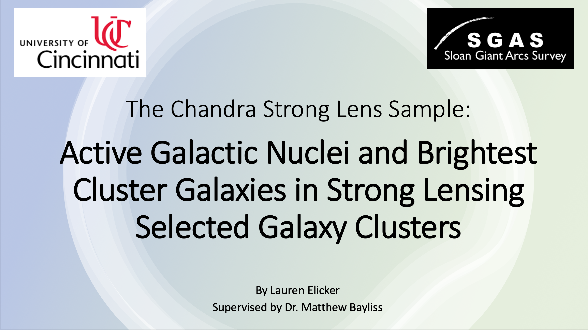
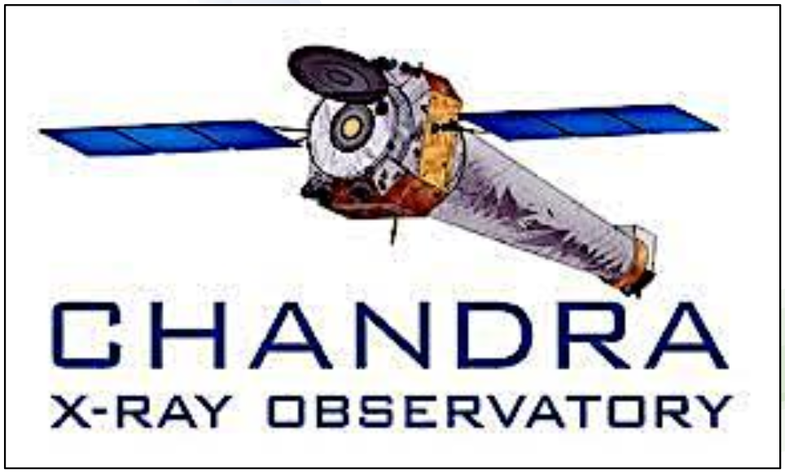
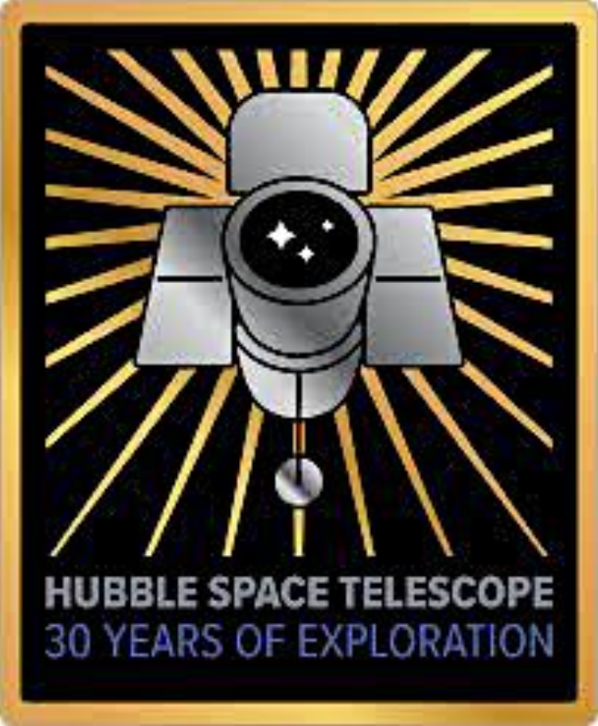
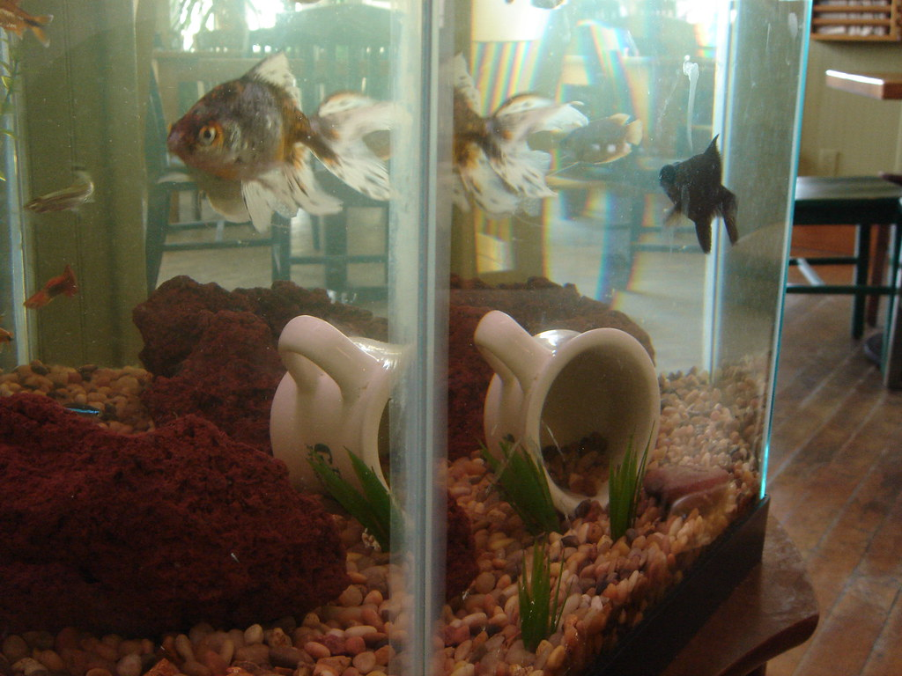
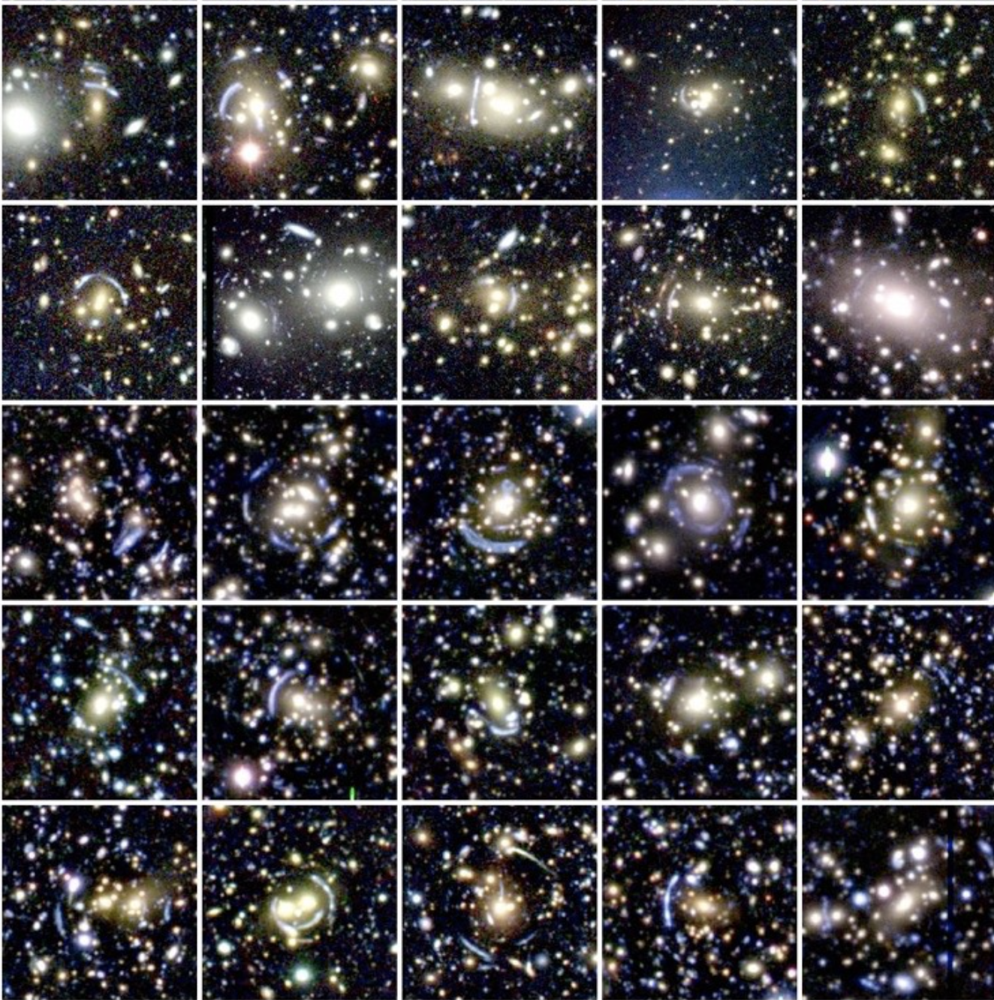

AGN in Strong Lensing Galaxy Clusters

This project uses Chandra X-ray Observatory, Hubble Space Telescope, and WISE catalog images to identify brightest cluster galaxies that are "active" (active galactic nuclei; AKA supermassive black holes) in the centers of strong lensing galaxy clusters. I'm starting with a lot of astro lingo, so I'll explain each piece below.

Galaxy clusters are composed of 100s to 1000s of gravitationally bound galaxies. These are the most massive structures in the universe. Galaxy clusters have extremely strong gravitational fields, causing some of them to be strong lensing. Strong lensing is the bending of light because of the presence of a strong gravitational field (and the consequent bending of spacetime). It's the same principle as light bending (refraction) when it travels through different materials (air, water, etc.).
In the image above, we see two images of the same fish and the same mug in a fish tank because of light bending. The same effect happens with obejcts in space. When a background object is strongly lensed by a galaxy cluster, the background object can get distorted and appear as multiple images. Extended streaks of light are classic signs of strong lensing (called Einstein rings), which can be seen in our sample of strong lensing galaxy clusters below.
The cause of a cluster being strong lensing or non-lensing is not well known.
In the centers of most galaxy clusters is a highly luminious and massive galaxy, called the brightest cluster galaxy (BCG). There can be multiple BCGs, if, for example, two galaxy clusters merged together, but generally each galaxy cluster has one BCG. They can be identified in the cluster gallery two figures above as a bright, large, circlular object in the center of an Einstein ring.
Thinking more broadly, a BCG is a massive galaxy, and at the center of most large galaxies is a supermassive black hole. Black holes are either dormant, meaning they are not 'feeding' on any matter, or active, meaning that they are consuming gas and emitting lots of energy. These active black holes are called active galactic nuclei (AGN).